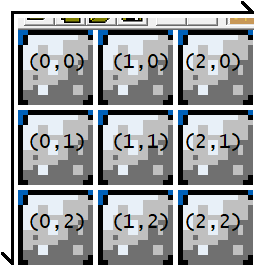
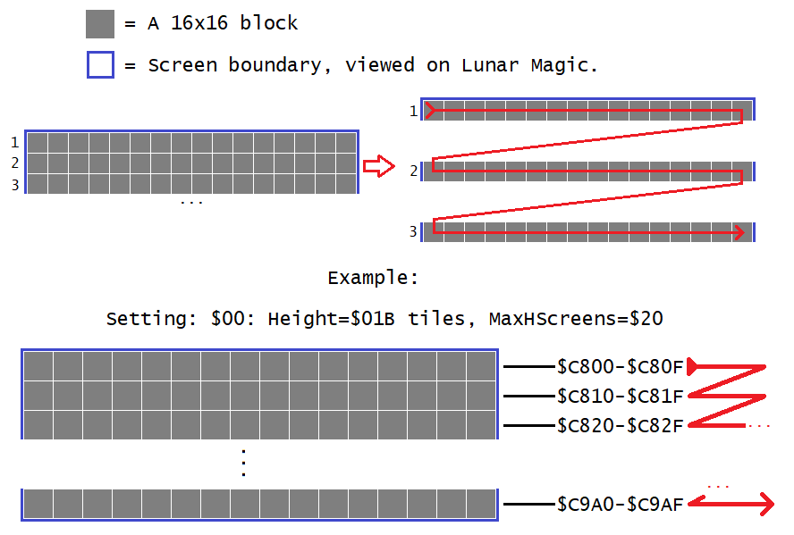
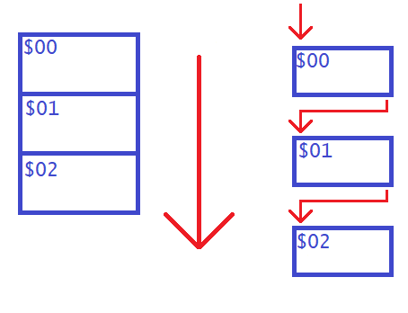
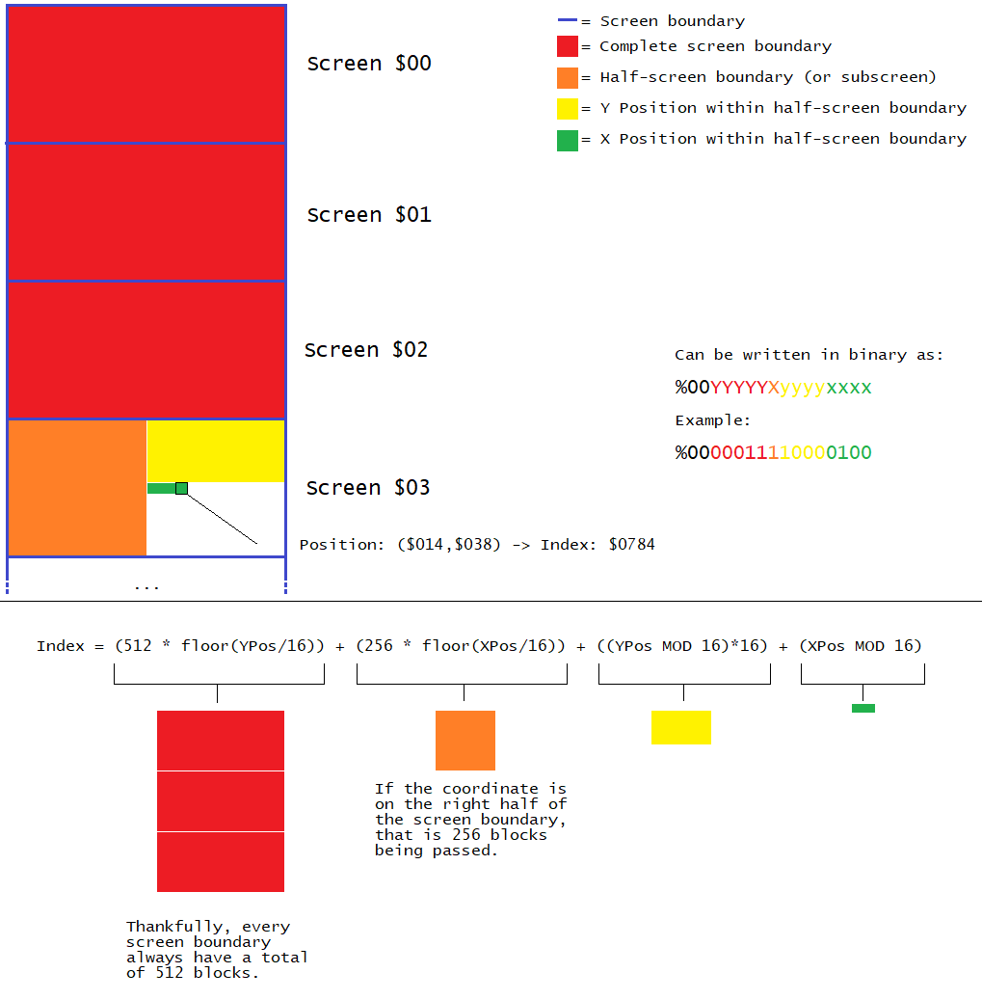
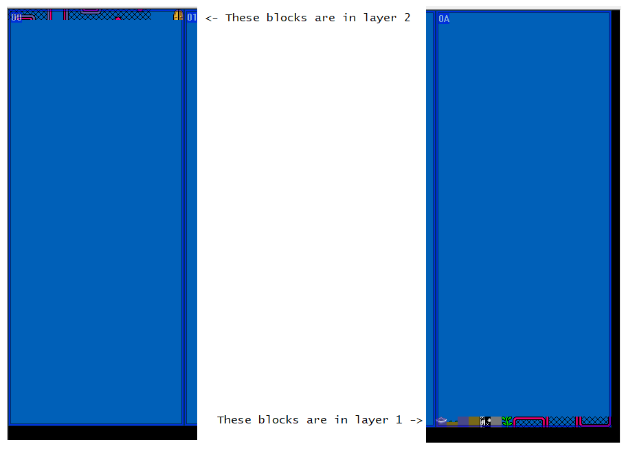

See JS_C800Calculator.html to obtain values of which block in the level along with statistics
^Introduction
In SMW, during levels, save for boss levels, is loaded, the tile data, which keeps track of every tile on how Mario and sprites interact with blocks on layer 1 (or layer 2), are stored in RAM $7EC800 for low byte map16 numbers and $7FC800 for the high bytes.
In a SA-1 game, it would be at address $40C800 and $41C800 instead.
Because the 2 lower bytes (low word, or “page”) of the 24-bit (3-bit) address are the same on different banks (leftmost byte of the 3-byte), I'll be referring the blocks by their page.
When a block is in a level, its map16 number, which each being 2 bytes long, are written on both banks on the same page, with the low byte on the lower bank value ($7E/$40) and the high byte in the higher bank value ($7F/$41). For example a cement block, which is tile $0130, placed at the top-left of the level, which is X: $0000, Y: $0000 in block units (not pixels),
would mean $7E/40:C800: $30 and $7F/41:C800: $01. Each byte on both banks correspond to a block, using the same example but at X: $0001, Y: $0000 would cause the cement block to to be written to $C801 of both banks instead. Here is what it looks like:
|
+0 |
+1 |
+2 |
+3 |
... |
| In banks $7E/$40 |
$C800 (X:$0000,Y:$0000) |
$C801 (X:$0001,Y:$0000) |
$C802 (X:$0002,Y:$0000) |
$C803 (X:$0003,Y:$0000) |
... |
| In banks $7F/$41 |
$C800 (X:$0000,Y:$0000) |
$C801 (X:$0001,Y:$0000) |
$C802 (X:$0002,Y:$0000) |
$C803 (X:$0003,Y:$0000) |
... |
Now you may be wondering, how are the blocks being placed in a two-dimensional array when their data is stored in a linear array? Well, SMW, and by extension, Lunar Magic utilizes a combination of
row and column-major multidimensional array. The format stored in the RAM
differs depending on horizontal level and vertical level. Since LM added custom horizontal level dimensions, that also differs the layout of the blocks (primarily due to the blocks per screen column).
Notes:
-
Coordinates discussed here are in units of blocks, not pixels. To convert pixel coordinates to block coordinates, do BlockXPos = floor(PixelXPos/16) and BlockYPos = floor(PixelYPos/16). floor() is a function
that rounds down a number; picking the highest integer less-than or equal to the input. In ASM programming, division by 16 and rounding down can be performed via LSR #4 (shift bits to the right by 4 bits).
- As a side note, RAM $98~$99 (Y position) and $9A~$9B (X position) are entity collision point positions in pixels, as they are used to handle collision points currently processed by Mario and
Sprite to see if a given pixel coordinate is within which block in a 16x16 block grid. Various routines such as “ChangeMap16” or “GetMap16”, using $98~$9B however, rounds these values to the nearest
multiple of 16 (done via AND #$FFF0) internally.
- As always, X increases going rightwards, and Y increases going downwards. 2D Computer graphics often have the Y-axis orientated downwards, the same way how we read English text. Here is what it looks like:

- Lunar Magic displays the block coordinate in the level on the status bar on the bottom-left corner of the window when hovering a mouse within the level boundaries:
Note that before version 3.03 (released in April 1, 2019), the coordinates are displayed in decimal rather than hex.
- On layer 2 levels, layer 2 will have the same arrangement of blocks format as layer 1 for both horizontal and vertical levels. It will, however be reserving second half (roughly if there's an odd number of screens wide) of the $C800 table memory.
^Horizontal level block format
In horizontal levels, the grid of blocks are divided by 16-block wide “screen columns”, then subdivided those screen columns into many rows of 16x1 block groups.
Let's start with the smallest unit of chunking first, the blocks are ordered like a newspaper text:

Now, I used the term “screen columns” for a reason. When enumerating past the last block within the screen exit boundary (the blue-bordered chunks seen in Lunar Magic when “View Screen Exits” is turned on),
you advance to the top-leftmost block of a screen exit below, rather than the screen exit to the right (unlike the screen exit numbering). If the bottom of the level is reached, however, then it would be the top screen exit to the right, for example:

Starting from screen $00, blocks are enumerated left to right, and going past the rightmost block in the screen column, the next block would be the leftmost block but now down a row, and repeats. When the bottom row's last block in a screen exit boundary is reached (shown in red),
the next block would be the top-leftmost block the screen below (in orange). Finally, when reaching the bottom of the level, after the last block in the screen column (yellow), the next block would be the first block of the next column (green).
^Calculating Index <-> Coordinates of horizontal levels
Because the block grid is subdivided this way, here's a visual on how I solved a formula on converting the index and coordinates:

Formula in text form:
- Obtain Index: Index = (BlocksPerScrnCol * floor(XPos/16)) + (YPos*16) + (XPos MOD 16)
- Obtain X and Y positions (euclidean division frequently used here):
- XPos = (floor(BlockIndex/BlocksPerScreenColumn)*16) + (Index MOD 16)
- YPos = floor((BlockIndex MOD BlocksPerScreenColumn)/16)
Notes:
-
RAM $13D7 ($73D7 in SA-1) is the level height in pixels, but because every screen column in horizontal levels are always 16 blocks wide, and that blocks are always 16 pixels high,
this is also the number of blocks per screen column (we do this: LevelHeightInBlocks = LevelHeightInPixels / 16 pixels per block → BlocksPerScreenColumn = LevelHeightInBlocks * 16 across each screen, resulting in dividing by 16, then multiplying back up by 16).
-
Mod is the modulo operator, the remainder of dividing two numbers. For example: 18/16, in Euclidean Division, is quotient = 1, remainder = 2. therefore
18 MOD 16 will output 2.
^Vertical level block format
Vertical levels are formatted like this: The grid is divided into 32x16-block screen exits, then they are subdivided by the 2 16x16 sub-screen areas (left and right half of the screen exit), and finally subdivided again by 16x1 areas:

When enumerating past the last block in a screen exit, it repeats on the next screen exit down:

^Calculating Index <-> Coordinates of vertical levels

Similar to horizontal levels, but because there are no dimension settings for vertical levels, the task is much easier, and even more so thanks to the fact that each screen's width and height and the number of blocks are all powers of 2, making easy use of bitwise operations (just re-arrange the sequence of bits).
In fact, the index in binary is %00YYYYYXyyyyxxxx, where uppercase X and Y represents what screen boundary and what halves (X = 0 for left and 1 for right) within a screen boundary.
Formulas:
- To calculate index: Index = (512 * floor(YPos/16)) + (256 * floor(XPos/16)) + ((YPos MOD 16)*16) + (XPos MOD 16)
- To calculate coordinates:
- XPos = (floor((BlockIndex MOD 512)/256)*16) + (BlockIndex MOD 16)
- YPos = (floor(BlockIndex/512)*16) + (floor(BlockIndex/16) MOD 16)
^Other information
When using Layer 2 (or layer 3) levels, the width of the level in horizontal levels or the height in vertical levels is halved, rounded downwards to
the nearest screen boundary. The other “half” (in quotes because it is not always exactly) of the $C800 table is used up by layer 2/3 in the
same data format order pattern as layer 1.
- For layer 2 levels, to get the corresponding position of something relative to layer 1 but on layer 2 that may be moved around, you would do this:
ConvertedLayer2XY = PositionRelativeToLevelXY + (Layer2XYScreen - Layer1XYScreen), then perform interaction with layer 2 using ConvertedLayer2XY instead of
PositionRelativeToLevelXY (and make sure RAM $1933 is set to #$01 so subroutines you use also goes layer 2 mode),
and then reverse the offset when you are done: RestoredXYPos = ConvertedLayer2XY - (Layer2XYScreen - Layer1XYScreen). In SMW, a code
at $00E953 does this:
CODE_00E94C: A9 01 LDA.B #$01 ;\ process layer 2
CODE_00E94E: 8D 33 19 STA.W $1933 ;/
CODE_00E951: C2 20 REP #$20 ; Accum (16 bit)
CODE_00E953: A5 94 LDA RAM_MarioXPos ;\Temporally displace mario's position, this makes it so that layer 2 interaction account for layer 2 being moved.
CODE_00E955: 18 CLC ;|
CODE_00E956: 65 26 ADC $26 ;|Mario's position is now ConvertedLayer2XY.
CODE_00E958: 85 94 STA RAM_MarioXPos ;|
CODE_00E95A: A5 96 LDA RAM_MarioYPos ;|
CODE_00E95C: 18 CLC ;|
CODE_00E95D: 65 28 ADC $28 ;|
CODE_00E95F: 85 96 STA RAM_MarioYPos ;/
CODE_00E961: E2 20 SEP #$20 ; Accum (8 bit)
CODE_00E963: 20 DB EA JSR.W CODE_00EADB
CODE_00E966: C2 20 REP #$20 ; Accum (16 bit)
CODE_00E968: A5 94 LDA RAM_MarioXPos ;\reverse the displacement of mairo's position to counteract the above code. NOTE that this doesn't use push-pull stack
CODE_00E96A: 38 SEC ;|so that blocks that sets player XY position aren't canceled (pull commands (PLA/PLX/PLY) followed by "store" (STA/STX/STY)
CODE_00E96B: E5 26 SBC $26 ;|would always set them to specific value no matter of the changes before it by blocks)
CODE_00E96D: 85 94 STA RAM_MarioXPos ;|
CODE_00E96F: A5 96 LDA RAM_MarioYPos ;|Mario's Position is now RestoredXYPos.
CODE_00E971: 38 SEC ;|
CODE_00E972: E5 28 SBC $28 ;|
CODE_00E974: 85 96 STA RAM_MarioYPos ;/
CODE_00E976: E2 20 SEP #$20 ; Accum (8 bit)
If there is an odd number of H-screens, such as “$06: Height=$026 tiles, MaxHScreens=$17” on a layer 2 horizontal level, there
is a gap in the data between the last byte of layer 1 and the first byte of layer 2 of a size equal to the number of blocks per screen column. For example of the mentioned setting:

I placed the blocks in an increasing map16 number order, with layer 1 blocks on the bottom of the last screen and layer 2 on the top of the first screen so you can see
it easier when viewed on a debugger. Looking at memory editor we can see there is an unused gap:

Notice the gap ranging from $7EE220 to $7EE47F (this also applies to the other bank, as their data position corresponds). This gap is 608 ($260 in hex) bytes long, this is also
the number of blocks per screen column (16*38 = 608). This gap being the number of blocks per screen column bytes long always exists when having any odd-number
of H-screens for a layer 2 level, except the 1-screen wide area (setting $1C), which you shouldn't probably use (0-screen wide area = black void).
It's unknown why Vitor Vilela/FuSoYa
to position the layer 2 data table in such a position, probably due to the rounding of the number of screens downwards to an integer as odd numbers isn't
divisible by 2, and also to avoid risking data overlaps of layer 1 and 2.
If you write to the $C800 table, it does change the map16 number like you would with GPS's change_map16 routine, however, the graphics will not be updated until
it is refreshed by level loading (during the screen fades to the level) or when re-entering the player's screen after being scrolled offscreen far enough. This is to prevent
V-blank overflow by updating the graphics only when necessary at the moment the block is changed during a map16 change routine (instead of writing to V-RAM's
tilemap and checking every block every frame). You can avoid this graphical glitch by:
- Changing the blocks during UberasmTool's level load: feature. Note: This executes at the time after the level is cleared (writing all tiles $0025 via
$0582C8 and $05833A) and before any LM-placed blocks (all objects and direct map16 tiles), therefore avoid placing any tiles using LM on the spot
you are going to write your block using uberasm tool's load:.
- Changing the blocks that are offscreen, beyond the “loading seam” (a column or row of blocks at the edge of the screen that loads the appropriate graphics to the tilemap).
- Have the block it is changing from and to use the exact same graphic, so the graphics are unnoticeable. Rarely ever you would need this, purposes like if sprites are “pseudo-solid” by writing
the blocks they lie on a solid invisible tile instead of using a routine that message boxes, red ? light switch, and invisible solid sprite block (sprite #$6D) uses, that prevents the player from going through
the sprite.
-
The rightmost boundary for horizontal levels and the bottommost boundary for vertical levels the routines uses to determine if the given coordinate is beyond that boundary is NOT always
the rightmost/bottommost edge that LM would allow placing stuff there, rather RAM address $5E (horizontal levels) and $5F (vertical level).
$5E and $5F specify the width and height of the level in number of screens (and where the game screen stops scrolling rightwards or downwards), minus 1. This boundary
can be a lower number than the full width and height of the level.
For example: A horizontal level with a setting of $04: Height=$022 tiles, MaxHScreens=$1A with $5E set to $02 (therefore, screens 0 and 1 are accessible in-game), if you give a coordinate
that is beyond screen column 1 (the position the screen stops scrolling rightwards), and then call subroutines involving block coordinates and indexing in C800ASMCodes.asm, this would flag this as “out of bounds”, despite being block X position is at or lower than $19F
(the rightmost X position possible to be placed in the level in LM).
Therefore, this “out of bounds” detection for the rightmost or bottomost uses the border where the screen scroll ends
at, not where the level's full dimension ends at. This is set by LM's “Number of Screens” in “Change Properties in Header” dialog (don't forget to uncheck the
“Auto-Set Number of Screens” in the “General Options” if you need to change that). The $C800 calculator JavaScript HTML file will always assume the full width and height on determining what RAM is used or not.
Thankfully, during block interaction (including during custom block code), $98-$9B (scratch RAM $0A-$0D for sprites after executing $019138) while processing layer 2 (RAM $1933 set to #$01),
their XY positions are relative to the top-left of layer 2, not the level, so this means that if you touch the top-left block on layer 2, regardless of the layer 2 positioning (($1E or
$1466), ($20 or $1468)), collision point will read as ($000*, $000*). This means you first check $1933, simply take the coordinates (if in pixels, divide by 16; LSR #4) as if
they're layer 1, use the routine to convert to $C800 indexing, and then load where the byte starts for layer 2. The list of layer 2 address follows:
- Setting $00: $E300
- Setting $01: $E400
- Setting $02: $E330
- Setting $03: $E400
- Setting $04: $E3A0
- Setting $05: $E3C0
- Setting $06: $E480
- Setting $07: $E380
- Setting $08: $E4E0
- Setting $09: $E380
- Setting $0A: $E560
- Setting $0B: $E390
- Setting $0C: $E540
- Setting $0D: $E400
- Setting $0E: $E580
- Setting $0F: $E400
- Setting $10: $E5C0
- Setting $11: $E3C0
- Setting $12: $E660
- Setting $13: $E3D0
- Setting $14: $E6F0
- Setting $15: $E400
- Setting $16: $E800
- Setting $17: $E3F0
- Setting $18: $E990
- Setting $19: $E400
- Setting $1A: $ED40
- Setting $1B: $E400